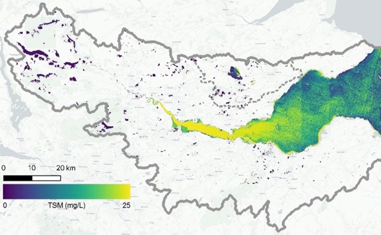

Our research makes the difference
At the University of Stirling, our researchers are truly making a difference. We’re working to improve the lives of people with dementia, feeding communities through sustainable aquaculture research and finding creative ways to inspire better health and wellbeing. Our challenge-led research is conducted to the highest standards of quality and integrity, allowing us to support and improve life across the world.
REF 2021 results and highlights
University of Stirling research is making a tangible difference across the globe – with new analysis recognising that 87% is of the highest standard, having an outstanding or very considerable impact on society.
Research themes
Our research is encompassed within three overarching themes: Cultures, Communities and Society; Global Security and Resilience; and Living Well.
Research programmes
Alongside our overarching themes, our research programmes further highlight our broad areas of expertise in 12 distinct areas. See what we're working on.
Faculty research
Staff in our five academic faculties are the starting point and driving force behind the research taking place at the University of Stirling.
More research news
See all research newsResearch Spotlights
Research Spotlight
Saving Europe's freshwaters
Find out how our research has been critical to implementing major new policies to repair tens of thousands of water bodies across Europe.

Research Spotlight
Combatting poverty and hunger via sustainable aquaculture
We have enhanced farm management in Europe, Latin America and Africa, which has led to increases in fish production, optimising the use of space and resources, and reduced the environmental impact from aquaculture.
Research Spotlight
Dementia and ageing research
We find innovative solutions to the challenges of ageing and dementia that are enabling older people to live independent lives, for longer.
Research Spotlight
Scotland’s sporting heritage
Find out more about our work to preserve and celebrate Scotland’s rich and diverse sporting history.
Research Spotlight
Tackling depression and suicide
Our research seeks to explore new ways in which free mental health awareness and intervention can create positive outcomes and new care pathways for patients struggling with depression or at risk of suicide.

Inspiring innovation
Our expertise has attracted major investment that positions the University at the heart of regional growth and research innovation. Plans are in place for a new £17 million Aquaculture Hub and £5 million International Environment Centre at the University as part of the Stirling and Clackmannanshire City Region Deal. We are also leading the Forth Environmental Resilience Array – a multi-million-pound project that will use sensors, satellite data and artificial intelligence to provide vital information on water quality and other critical factors that will drive sustainable economic recovery on a local, regional and ultimately global scale.
Research culture
In order to promote a healthy research culture across the University, we are engaged in a wide range of activities designed to ensure everyone's voice is heard and everyone's efforts are recognised. We believe that a supportive culture of collaboration and teamwork will allow all of our staff to achieve their potential, and we encourage staff at all levels to act as good role models and demonstrate fair, collaborative and supportive behaviour.
Most popular papers
Read and download our most popular research papers. You can also explore the entire catalogue of University of Stirling publications.
Loading...
Contact Research and Innovation Services